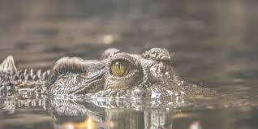

Datos interesantes

Los cocodrilos y sus parientes son reptiles de cuatro patas, muy similares a los lagartos. Se distinguen por su usual gran tamaño. En la espalda, desde el cuello hasta la cola, tienen hileras de placas óseas, que pueden dar la impresión de espinas o dientes. Quizás los conocemos mejor por su ferocidad, y en los casos de las especies mayores, por ser peligrosos al máximo.
- Los cocodrilos aparecieron por primera vez hace unos 55 millones de años, en el período Eoceno.
- El cocodrilo más grande del que se tiene registro es el cocodrilo marino, fue capturado en Australia en 1957, medía 8,5 metros de longitud y pesaba 1700 kilogramos. Después de esta especie, le sigue en tamaño el cocodrilo del Nilo, con ejemplares que miden más de 6 metros y pesan alrededor de 750 kilogramos.
- El sexo de un cocodrilo es determinado en base a la temperatura del huevo. En este sentido, los machos se producen a una temperatura de 31,6 °C, mientras que las hembras nacen con una temperatura mayor o menor a la de los machos.
- Los huevos de cocodrilo son prácticamente del mismo tamaño que los huevos de ganso.
- La mordida de un cocodrilo tiene una fuerza de más de 5.000 libras por pulgada. Los expertos afirman que se trata de la mordida más poderosa del mundo.
- Los cocodrilos reemplazan sus dientes 2 á 3 veces al año, es por esa razón que estos animales pueden llegar a tener hasta 3.000 dientes a lo largo de su vida.
- Los cocodrilos se refrescan manteniendo sus fauces abiertas en los momentos de mayor calor.
- La piel del cocodrilo es de tal dureza que puede hacerles frente a flechas, lanzas y hasta balas. Sólo su vientre es más suave y vulnerable.
|
.jpg)